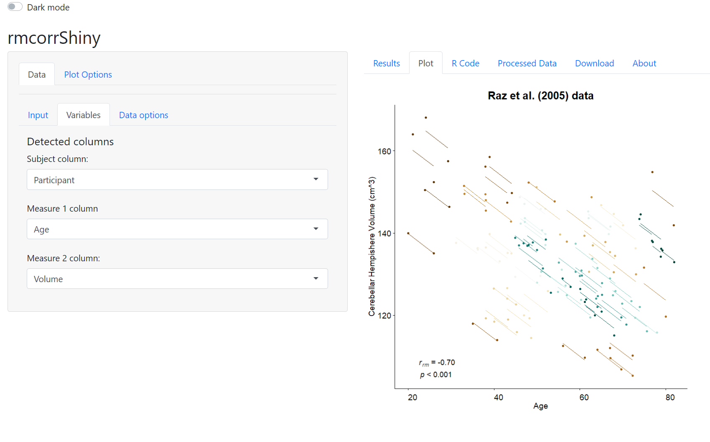

Repeated measures correlation (rmcorr) is a statistical technique for determining the common within-individual association for paired measures assessed on two or more occasions for multiple individuals.
Installation
install.packages('rmcorr')
#development version:
# install.packages("devtools")
devtools::install_github("lmarusich/rmcorr")Example
library(rmcorr)
rmcorr(Subject, PaCO2, pH, bland1995)
#> Warning in rmcorr(Subject, PaCO2, pH, bland1995): 'Subject' coerced into a
#> factor
#>
#> Repeated measures correlation
#>
#> r
#> -0.5067697
#>
#> degrees of freedom
#> 38
#>
#> p-value
#> 0.0008471081
#>
#> 95% confidence interval
#> -0.7067146 -0.2318631Graphical Interface for rmcorr
A Shiny web and standalone app with a graphical user interface is also available:
Web app
Standalone app

Disclaimer
This software was developed by U.S. Government employees and is subject to revision. The views expressed in the documentation and corresponding publications do not necessary represent the views of the U.S. Government.
This software is being provided to meet the need for timely best science. No warranty, expressed or implied, is made by the U.S. Government as to the functionality of the software and related material nor shall the fact of release constitute any such warranty. The software is provided on the condition that the U.S. Government shall not be held liable for any damages resulting from the authorized or unauthorized use of the software.
The above text was adapted from the USGS software disclaimer: toxEval U.S. Government disclaimer